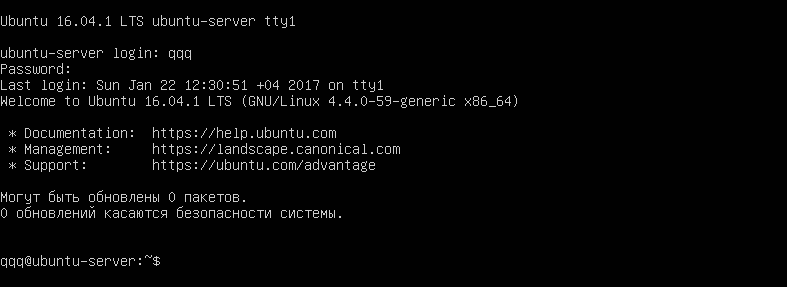
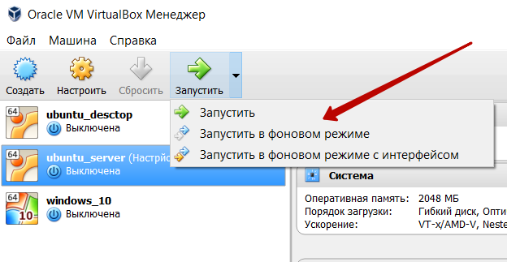

Установка Ubuntu Server в VirtualBox
В этой заметке пошаговая инструкция по установке Ubuntu Server в VirtualBox. Кроме установки указаны настройки чтобы в Ubuntu Server работала сеть и правильно отображалась кириллица в консоли.
Скачиваем образ Ubuntu Serveropen in new window и добавляем новую виртуальную машинуopen in new window.
Установка Ubuntu Server
Запускаем виртуальную машину.
Начинается процесс установки. Выбираем язык установки.
Выбираем Установить Ubuntu Server
Дальше идут региональные настройки. Выбираем нет на вопрос Определить раскладку клавиатуры? и выбираем настройки вручную.
Выбираем имя по которому ВМ будет видно в сети
Логин и пароль будут использоваться при удаленном подключении к виртуальной машине.
На виртуальной машины для экспериментов шифрование не имеет смысла.
Выбираем использовать весь диск в автоматическом режиме.
Если используется прокси его нужно указать

Выбираем Без автоматического обновления
Среди программ выбираем OpenSSH server чтобы настроить подключение к серверу без ввода пароля. Остальное лучше ставить вручную после установки.
Выбираем установку Да так как жесткий диск используется только для одной виртуальной машины.
Установка завершена, после установки произойдет загрузка системы.
Настройка шрифта в консоли
Запускаем ВМ, вводим логин и пароль. Сразу видно проблему с отображением кириллицы
Для исправления исправления в текущем сеансе нужно ввести команду
setupcon --force
А чтобы эта команда запускалась автоматически нужно ввести её в список в файле /etc/crontab. Для этого открываем его в текстовом редакторе nano:
sudo nano /etc/crontab
в конец файла добавляем
@reboot setupcon --force
Выходим с сохранением
ctrl+x Y Enter
И обновим все установленные пакеты
sudo apt update sudo apt upgrade
Перегружаемся
reboot
Кириллица отображается правильно 
Подключение к серверу через SSH
Сперва узнаем IP сервера, набираем команду
ifconfig
Копируем IP. Выключаем ВМ, и запускаем в фоновом режиме

Настройка подключения через PUTTY в следующей статьеopen in new window.